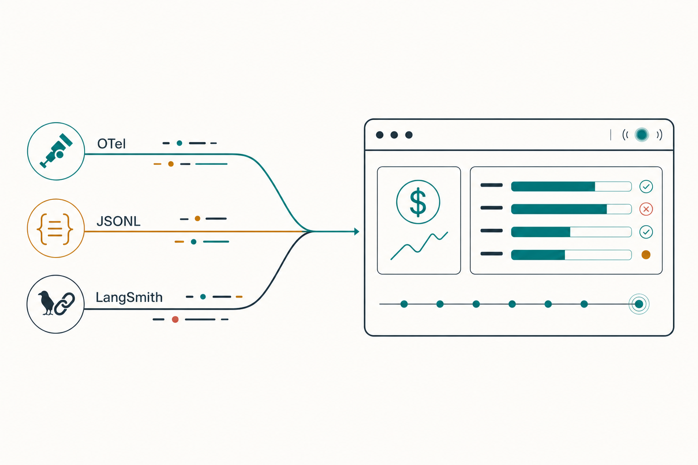
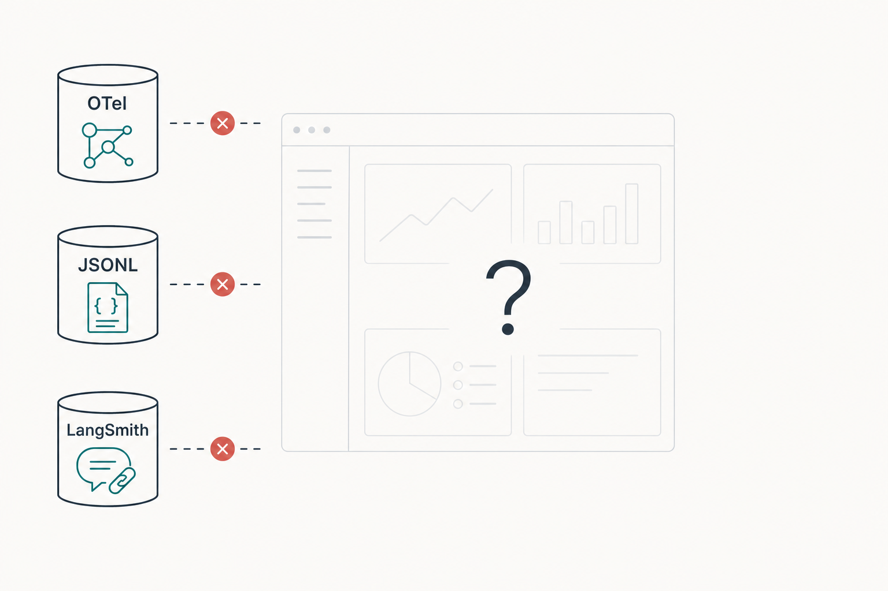
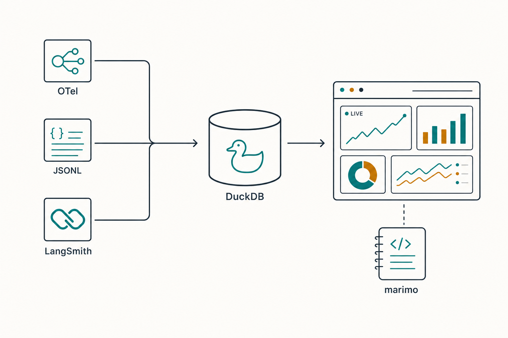
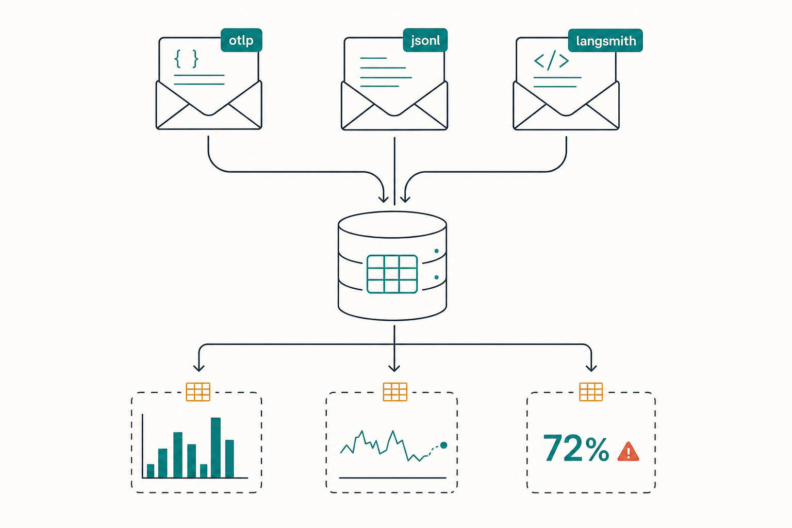
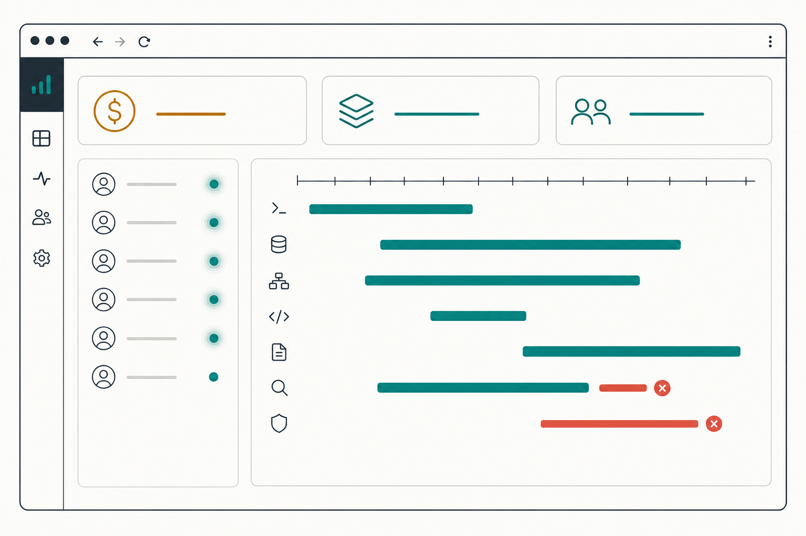
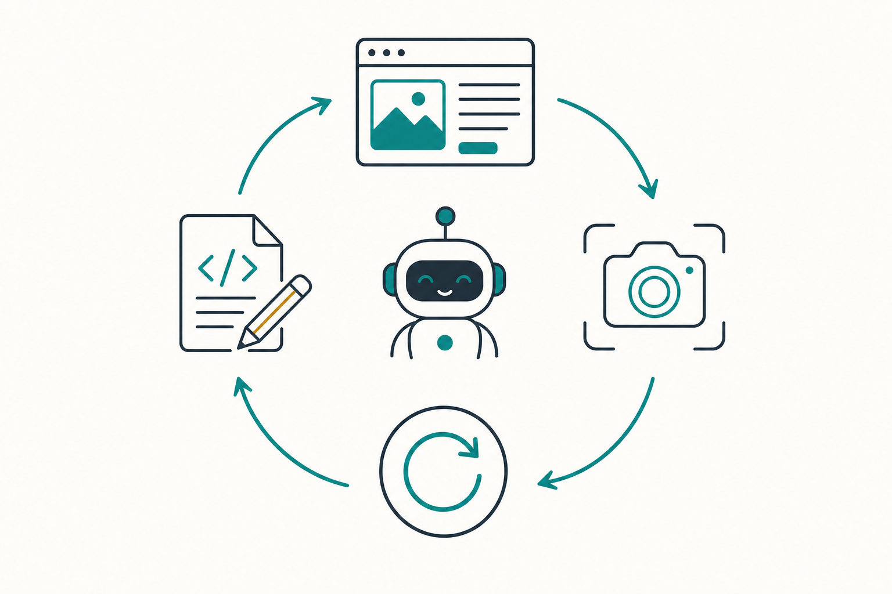
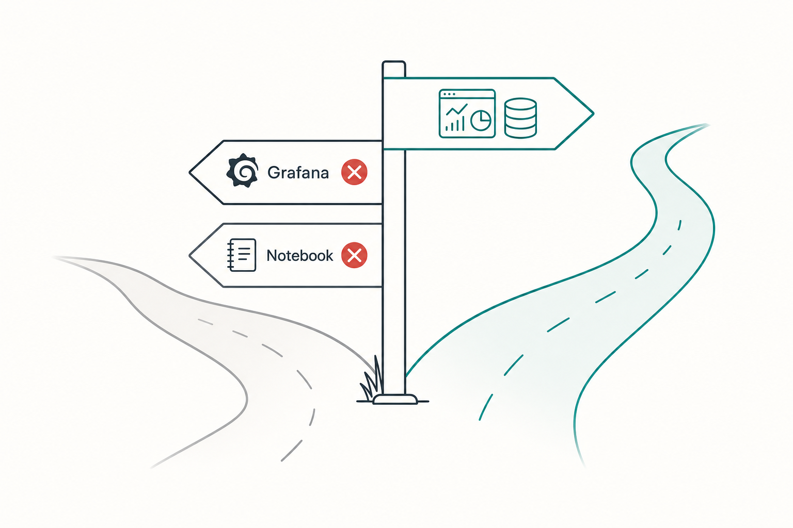
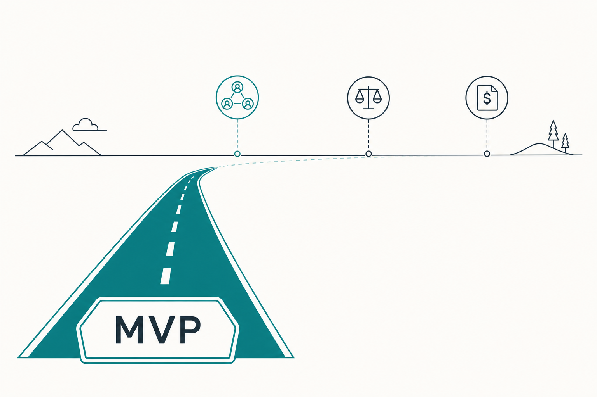

Plan: boss-ai-monitoring — Local Observability for AI Coding Agents

Purpose
Build boss-ai-monitoring: a locally-run, KISS observability tool for AI coding agents — Claude Code first — that answers, in one place and in near-realtime: What are my agents doing right now? How long does each task take? What does each session, agent, skill, and model cost? Which tools succeed and fail? Am I getting better or worse over time? The spec starts in this repo; the implementation lands in a standalone public GitHub repo (bossjones/boss-ai-monitoring) built with Python via uv, strict TDD, and optional Docker packaging. LangSmith traces (already configured via the langsmith-claude-code-plugins hook plugin) merge into the same store for a unified view.
Problem
Claude Code emits rich telemetry, but it is fragmented across three disconnected surfaces that no single local tool unifies:
- Native OpenTelemetry (
CLAUDE_CODE_ENABLE_TELEMETRY=1) — authoritativecost_usd, 8 metrics, ~24 log events withsession.idandprompt.idcorrelation keys — but forward-only and unused unless something is listening on an OTLP endpoint. - Session transcripts (
~/.claude/projects/**/*.jsonl) — full retroactive history of every session, message, and tool call — but a reverse-engineered format with no cost ground truth. - LangSmith traces (hooks plugin) — turn/tool/subagent-level traces with a queryable API — but siloed in LangSmith's cloud UI, disconnected from local cost and transcript data.
Existing tools each solve a slice: ccusage (CLI cost tables), Sniffly (JSONL error analysis), agtop (live TUI, no persistence), agentic-metric (SQLite aggregation, no web UI), claude-code-otel (Grafana, 4-container stack, no LangSmith/transcript joins). None provide: a persistent local store joining all three sources, per-task (prompt-level) timing, realtime web views, and a frontend an AI agent can itself inspect in a browser and improve.

Solution
One Python service (uv-managed, single Docker container optional) with three ingest paths writing to one DuckDB file, fronted by a FastAPI + SSE + vanilla HTML/htmx dashboard. This is the convergent design of the closest prior art (Sniffly, disler/pi-agent-observability) and was confirmed with the user over Grafana (4-container stack, agent-hostile JSON dashboards) and over marimo-as-primary (polling-only refresh, per-viewer kernels).
Claude Code ──OTLP http/json──▶ FastAPI :4318 /v1/logs + /v1/metrics (live, authoritative cost)
~/.claude/projects/**/*.jsonl ─▶ incremental JSONL reader (byte-offset cursors; history + gap-fill)
LangSmith cloud ◀──hooks plugin traces… ──▶ poller: Client.list_runs(start_time cursor)
│
▼ batched writes (Appender)
┌─────────────────────────┐
│ one DuckDB file │ raw `events` (JSON payload col)
│ + SQL views = metrics │ lineage: otlp | jsonl | langsmith
└─────────────────────────┘
│
▼
FastAPI + Jinja2 + htmx + SSE dashboard (live feed, per-task timeline, cost rollups)
[optional] marimo notebook on the same DuckDB file (ad-hoc exploration)- Events over metrics — OTel log events (
api_request,tool_result,tool_decision, …) are the primary stream; the 8 official metrics and the "5 metrics that matter" are derived SQL views.prompt.idgroups everything downstream of one user prompt = per-task timing.session.id↔ LangSmiththread_id= merge key. - Anthropic telemetry discipline — every event row carries
model,git_sha,agent_name/skill_name, andsourcelineage, so slow-regression time-series and per-feature cost/latency attribution work in plain SQL ("store results like telemetry, not test logs"). - Watcher discipline — anything analytical (correction mining, drift checks, error classification) runs as trailing background jobs over stored data, never on the agent's critical path.
- Agent-editable frontend — server-rendered HTML/htmx is the format a coding agent edits most reliably; Phase 7 codifies the screenshot → critique → edit → reload loop.

Relevant Files
Existing Files (this repo — read-only context)
- existing
specs/breakout-openobserve.md— the repo's canonical "starts here → standalone GitHub repo" pattern (gh repo create, uv scaffold, hatchling, justfile, RED/GREEN/REFACTOR); this plan mirrors its structure. - existing
.env.sample— whereLANGSMITH_API_KEY/ telemetry env var documentation gets referenced for local development from this repo; the standalone repo ships its own.env.sample. - existing
~/.claude/projects/**/*.jsonl— Claude Code session transcripts; the backfill data source (read-only, external to both repos).
New Files (target standalone repo bossjones/boss-ai-monitoring)
- new
pyproject.toml— uv + hatchling, Python ≥3.13, deps: fastapi, uvicorn, duckdb, jinja2, httpx, langsmith, pydantic, pydantic-settings, pyyaml, sse-starlette; dev: pytest, pytest-asyncio, respx, ruff, pyrefly, playwright. - new
justfile—just check= ruff + pyrefly + codespell + pytest;just dev,just docker-build. - new
src/boss_ai_monitoring/config.py— pydantic-settingsBaseSettingsconfiguration: defaults → optional YAML file → env var overrides (highest precedence). - new
src/boss_ai_monitoring/store/schema.py+store/writer.py— DuckDB schema (raweventstable, JSON payload column), batched Appender writer, cursor tables. - new
src/boss_ai_monitoring/store/views.sql— SQL views: sessions, per-prompt tasks, daily cost, tool stats, five-metrics, drift check. - new
src/boss_ai_monitoring/ingest/otlp.py— FastAPI router:POST /v1/logs,POST /v1/metrics(OTLP http/json), OTel → ObsEvent mapping, idempotency. - new
src/boss_ai_monitoring/ingest/jsonl.py— incremental transcript reader with per-file byte-offset cursors; dedupe vs OTLP events. - new
src/boss_ai_monitoring/ingest/langsmith_poll.py— rate-limit-awarelist_runspoller with start_time cursor. - new
src/boss_ai_monitoring/jobs/— trailing background jobs: correction-language scan, OTel-vs-JSONL drift self-check, error classification. - new
src/boss_ai_monitoring/web/—app.py,templates/*.html(Jinja2 + htmx),static/style.css, SSE stream endpoint. - new
tests/— TDD suite: fixture JSONL transcripts, canned OTLP payloads, respx-mocked LangSmith, playwright smoke test. - new
notebooks/explore.py— marimo exploration notebook (read-only connection to the same DuckDB file). - new
Dockerfile+compose.yaml— single-container packaging; localuv runremains the primary dev path. - new
docs/AGENT_LOOP.md— the agent frontend-improvement feedback loop (Phase 7). - new
.env.sample,README.md,.github/workflows/ci.yml,LICENSE(MIT),.pre-commit-config.yaml.
Implementation Phases
IMPORTANT: Execute every phase and task step by step, in order, top to bottom. Every code phase is strict TDD: write the failing test first (RED), implement to green (GREEN), then refactor with tests passing (REFACTOR).
Status markers: [] idle · [wip] in progress · [x] complete · [f] failed. All start as []; the Build Plan workflow updates them as it works.
[] Phase 1: Standalone Repo Scaffold + TDD Harness
Create the public repo and a uv package skeleton whose test/lint harness is proven before any feature code exists. Mirrors the breakout-openobserve scaffold recipe.
1. Create repository and package skeleton
[]gh repo create bossjones/boss-ai-monitoring --public --description "Local-first observability for AI coding agents (Claude Code): cost, per-task timing, tool activity, LangSmith merge" --clone[]uv init --package --python 3.13; set hatchling build backend,src/layout, project metadata, MITLICENSE.[]uv add fastapi uvicorn duckdb jinja2 httpx langsmith pydantic pydantic-settings pyyaml sse-starletteanduv add --dev pytest pytest-asyncio respx ruff pyrefly codespell pre-commit playwright.[]Writejustfile:check(ruff check + ruff format --check + pyrefly check + codespell + pytest),dev(uvicorn --reload),fmt,docker-build.[]Type-checker workflow: pyrefly is the checker; when adding or fixing annotations anywhere in this repo, invoke the/agent-harness:pyrefly-typingskill for typing help (pyrefly-idiomatic annotations, suppressions, config).[]Write.github/workflows/ci.yml(uv setup →just check) and.pre-commit-config.yaml.[]Write.env.sampledocumentingCLAUDE_CODE_ENABLE_TELEMETRY,OTEL_METRICS_EXPORTER=otlp,OTEL_LOGS_EXPORTER=otlp,OTEL_EXPORTER_OTLP_PROTOCOL=http/json,OTEL_EXPORTER_OTLP_ENDPOINT=http://localhost:4318,LANGSMITH_API_KEY,CC_LANGSMITH_PROJECT,BAM_DB_PATH,BAM_CLAUDE_PROJECTS_DIR.
2. Prove the TDD harness (RED → GREEN)
[]Write failing smoke testtests/test_smoke.py::test_package_importsassertingboss_ai_monitoring.__version__exists — watch it fail, then make it pass.[]Commit scaffold; push; confirm CI green on GitHub.
3. Configuration module (TDD)
[]RED: tests forconfig.py— a pydantic-settingsBaseSettingsmodel (BamSettings) with nested sections (server: dashboard/OTLP ports+bind;store: db_path;ingest: jsonl scan interval, projects dir, langsmith poll interval/project;jobs: enable flags) and precedence env vars (prefixBAM_, nested via__) > YAML file (config.yamlor$BAM_CONFIGpath, viaYamlConfigSettingsSource) > code defaults.[]GREEN: implement; missing YAML file is fine (defaults apply); malformed YAML raises a clear startup error naming the file and line.[]Ship a commentedconfig.sample.yaml; document precedence in README and keep.env.sampleas the env-var reference.
4. Testing Strategy
Config module is fully unit-tested (tmp YAML files + monkeypatched env, asserting precedence and error paths). Beyond that, the phase's product is a working harness — validation is the harness itself plus CI.
[]just check— full lint/type/test gate passes locally.[]gh run watch --exit-status— CI passes on the pushed scaffold.
[] Phase 2: Storage Core — DuckDB Schema, Writer, Metric Views
One DuckDB file is the whole persistence story. A canonical ObsEvent envelope (pi-agent-observability pattern) with a JSON payload column means new event types need no migrations; SQL views turn raw events into every metric the dashboard shows.

1. Event schema (TDD)
[]RED: tests foreventstable shape — columns:event_id(pk),ts,source(otlp|jsonl|langsmith),event_type,session_id,prompt_id,model,git_sha,agent_name,skill_name,tool_name,cost_usd,duration_ms,tokens_input,tokens_output,tokens_cache_read,tokens_cache_creation,success,cwd,payload(JSON) — plusingest_cursorstable (source, key, cursor, updated_at).[]GREEN:store/schema.pycreates tables idempotently (CREATE TABLE IF NOT EXISTS).
2. Batched writer (TDD)
[]RED: tests — writer buffers N events / T ms then flushes atomically via DuckDB Appender; duplicateevent_idis a no-op (idempotent ingest); single-writer access serialized behind one connection.[]GREEN:store/writer.pywith async-safe batch queue + flush loop.
3. Metric views (TDD — golden fixtures)
[]RED: seed a fixture event set with known totals; assert view outputs:v_sessions(start/end/duration/cost/model),v_tasks(perprompt_id: wall-clock, cost, tokens, tool counts),v_costs_daily,v_tool_stats(success rate, p50/p95 duration per tool),v_attribution(cost+latency per agent_name/skill_name/model — the Anthropic per-feature attribution),v_five_metrics(task completion rate, tool selection accuracy via tool_result.success, autonomy score via tool_decision.source, recovery rate via error→retry patterns, cost per successful task).[]GREEN:store/views.sqlapplied at startup.
4. Testing Strategy
Pure pytest against a temp-file DuckDB (no mocks needed — DuckDB is embedded). Edge cases: empty DB, duplicate event ids, events missing optional attrs (NULL prompt_id), out-of-order timestamps, JSON payload with unexpected keys (must not break views).
[]uv run pytest tests/store -q— schema, writer, and all views green including edge cases.[]just check— zero lint/type errors.
[] Phase 3: Ingest — OTLP Receiver (live, authoritative)
Skip the otel-collector: the FastAPI app itself speaks OTLP http/json on :4318. Claude Code points straight at it. Log events are the primary stream (authoritative cost_usd, duration_ms, all four token classes, prompt.id); metrics are accepted and stored but views prefer events (delta temporality makes raw metrics annoying).
1. OTLP endpoints (TDD)
[]Capture real fixture payloads: run Claude Code once with telemetry pointed at a dump script; commit sanitizedtests/fixtures/otlp/*.json(api_request, tool_result, tool_decision, user_prompt, compaction, api_error + a metrics export).[]RED: tests POSTing fixtures to/v1/logsand/v1/metricsassert correct ObsEvent rows land (cost, tokens, session_id, prompt_id extracted from OTel attributes) and correct OTLP response envelope returned.[]GREEN:ingest/otlp.py— parse OTLP JSON (resourceLogs → scopeLogs → logRecords), map attributes → ObsEvent columns, everything else intopayload.[]RED→GREEN: idempotency — replaying the same fixture batch creates no duplicate rows (event_id = hash of source + session_id + timeUnixNano + body).[]RED→GREEN: malformed payloads return 400 without crashing the writer; unknown event types are stored raw (never dropped).
2. End-to-end wiring
[]Document (README + .env.sample) the exact Claude Code settings/env to emit here; verify a real local session's events appear in DuckDB.
3. Testing Strategy
FastAPI TestClient + canned OTLP fixtures — hermetic, no network. Edge cases: batched multi-record payloads, missing optional attributes, gzip content-encoding, oversized bodies (reject > configurable limit), concurrent posts (writer serialization).
[]uv run pytest tests/ingest/test_otlp.py -q— all fixture and edge-case tests green.[]just check— clean.[]Manual E2E:just dev+ one real Claude Code prompt →duckdb $BAM_DB_PATH "SELECT event_type, count(*) FROM events GROUP BY 1"shows live rows.
[] Phase 4: Ingest — JSONL Transcript Backfill + Gap-Fill
OTel is forward-only; transcripts are the historical record and the safety net when the endpoint was down. Incremental reader over ~/.claude/projects/ with per-file byte-offset cursors (agentic-metric's proven pattern), deduped against OTLP-sourced events.
1. Incremental reader (TDD)
[]Commit sanitized fixture transcripts (tests/fixtures/transcripts/): a completed session, a still-growing session, a session with subagents, a malformed line.[]RED: tests — scan discovers files; parses assistant/user/tool entries into ObsEvents (source=jsonl); a second scan after appending lines ingests only the delta (byte-offset cursor persisted iningest_cursors); truncated/rotated file resets cursor safely; malformed lines are skipped with a logged warning, never a crash.[]GREEN:ingest/jsonl.py— polling scanner (configurable interval, default 15s) + parser.[]RED→GREEN: dedupe — when an OTLP event with the same session_id + request_id already exists, the JSONL row is markedsource=jsonlshadow and excluded from cost views (OTel cost is authoritative; JSONL costs are estimates and flagged as such).[]RED→GREEN: per-sessiongit_sha/cwdextraction from transcript metadata where present.
2. Testing Strategy
Pure pytest over fixture directories in tmp_path — hermetic. Edge cases above plus: empty projects dir, thousands-of-files dir (scan stays under a time budget), unicode/emoji content, sessions spanning compaction.
[]uv run pytest tests/ingest/test_jsonl.py -q— green including cursor, dedupe, and malformed-line cases.[]Manual E2E: point at real~/.claude/projects/→ historical sessions appear; re-run ingests nothing new (cursors hold).[]just check— clean.
[] Phase 5: Ingest — LangSmith Poller (merged view)
The langsmith-claude-code-plugins hook plugin already pushes traces up; this phase pulls them back down. A cursor-based poller on Client.list_runs lands runs as ObsEvents (source=langsmith), joined to local sessions via thread_id ↔ session.id.
1. Poller (TDD)
[]RED (respx-mocked LangSmith API): poller callslist_runs(project_name=$CC_LANGSMITH_PROJECT, start_time=<cursor>, select=[trimmed fields]); maps runs → ObsEvents (run_type, latency, token usage, feedback, trace_id); persists start_time cursor; join populatessession_idfrom thread_id.[]RED→GREEN: rate-limit awareness — max 10 req/10s budget, exponential backoff on 429, poll interval configurable (default 60s).[]RED→GREEN: graceful degradation — missing/invalidLANGSMITH_API_KEYdisables the poller with a visible dashboard notice, never a crash (LangSmith is enrichment, not a dependency).[]RED→GREEN: unmatched runs (no local session with that thread_id) are stored and surfaced in a "LangSmith-only" bucket, not dropped.
2. Testing Strategy
respx-mocked httpx transport for the LangSmith client — hermetic, deterministic. Edge cases: empty pages, pagination, 429 storms, runs with missing token usage, clock-skewed start_time overlap (cursor overlaps 1 min and dedupes on run id).
[]uv run pytest tests/ingest/test_langsmith.py -q— green including rate-limit and degradation cases.[]Manual E2E with the real key: one traced Claude Code session appears in DuckDB with both otlp and langsmith rows sharing a session_id.[]just check— clean.
[] Phase 6: Dashboard — FastAPI + Jinja2 + htmx + SSE
The single pane of glass. Server-rendered HTML with htmx partial swaps; realtime via one SSE stream. Vanilla CSS matching a small design-token sheet — deliberately framework-free so an agent can edit any view file directly (Phase 7 depends on this).

1. Views (TDD where testable — route/JSON tests; visual polish iterates in Phase 7)
[]RED→GREEN/Overview: stat tiles (today's cost, tokens by class, active sessions, tool success rate), 14-day cost sparkline, recent sessions table.[]RED→GREEN/live: SSE-driven live event feed (new events pushed on ingest flush) + active-session cards with running cost/duration.[]RED→GREEN/sessions/{id}: per-task timeline — one row perprompt_idwith wall-clock bar, cost, tokens, tool calls (success/fail), subagent/skill attribution; LangSmith deep-link when a matching trace exists.[]RED→GREEN/costs: daily/weekly rollups; attribution table per model / agent / skill / project (the +6%-accuracy-for-+72%-latency style tradeoff view).[]RED→GREEN/api/events/stream(SSE, sse-starlette) and JSON endpoints backing every panel (each panel = htmx fragment + JSON twin for tests).[]RED→GREEN provenance/freshness footer component on every panel: source lineage (otlp/jsonl/langsmith) + MAX(ts) per source + drift-check badge (Anthropic trust pattern).
2. Testing Strategy
Route tests with TestClient against seeded DuckDB fixtures (assert JSON twins + key DOM markers in HTML fragments); one playwright smoke test booting the real server: loads /, opens /live, POSTs an OTLP fixture, asserts the event appears via SSE within 5s. Edge cases: empty DB (all views render friendly empty states), sessions with no prompt_id events, very long sessions (pagination).
[]uv run pytest tests/web -q— route/JSON/fragment tests green.[]uv run pytest tests/e2e/test_smoke_playwright.py -q— SSE realtime smoke test green.[]just check— clean.
[] Phase 7: Agent Frontend-Improvement Loop
Codify the feedback loop where an AI agent inspects the running dashboard in a browser and improves it. The deliverable is docs/AGENT_LOOP.md plus one demonstrated iteration with before/after screenshots committed.

1. Document and demonstrate the loop
[]Writedocs/AGENT_LOOP.md: startjust dev; open the dashboard with (in order of preference) the Claude Code desktop in-app browser / built-in Browser pane (preview_start→navigate→read_page/screenshot), the Playwright MCP (browser_navigate→browser_take_screenshot), or a boss-cmux browser surface (cmuxopen surface →read-screen); critique against the design-token sheet; editweb/templates/+web/static/style.css; uvicorn --reload picks it up; re-screenshot and compare.[]Adddocs/design-tokens.md— the palette/typography contract the agent critiques against (same identity family as this spec).[]Run one real iteration end-to-end with Claude Code; commit before/after screenshots underdocs/img/agent-loop/.
2. Testing Strategy
Process validation, not unit tests: the loop is proven by artifacts and by the playwright suite staying green after the agent's edits (regression net for agent-made frontend changes).
[]ls docs/img/agent-loop/— before/after screenshots exist and are referenced from AGENT_LOOP.md.[]uv run pytest tests/e2e -q— playwright smoke still green after the demonstrated agent edit.
[] Phase 8: Trailing Quality Jobs (off the critical path)
Watcher's lesson applied: heavy or judgmental analysis runs as background jobs over stored data — never blocking ingest or the agent. Three jobs, all pure-SQL/heuristic in v1 (LLM-judged variants are future work).
1. Jobs (TDD)
[]RED→GREEN correction-language scan: heuristic detection over transcript user messages ("no, that's wrong", "undo that", re-prompt within 60s of a failed tool_result) → per-session correction score (Anthropic's correction-mining analog); surfaced on session pages.[]RED→GREEN drift self-check: daily job comparing OTel-derived vs JSONL-derived session/token totals per day; drift > threshold writes an alert row → dashboard badge (Anthropic "silent failure" sanity-check pattern).[]RED→GREEN error classification rollup: groupapi_error/tool_result.error_typeinto a taxonomy table feeding a dashboard panel (Sniffly's most-loved feature).[]RED→GREEN scheduler: asyncio periodic runner with jitter, per-job enable/disable config, last-run status persisted and shown in the provenance footer.
2. Testing Strategy
Pytest over seeded fixture data with known expected outputs (e.g. a fixture set with 2 corrections and 1 drift day must yield exactly those rows). Edge cases: empty data, all-sources-agree (no alert), job crash isolation (one failing job never kills the scheduler or ingest).
[]uv run pytest tests/jobs -q— all jobs green including crash-isolation test.[]just check— clean.
[] Phase 9: marimo Notebook, Docker Packaging, Docs
Ship the exploration sidecar, the container story, and the onboarding docs that turn this from "works on my machine" into a standalone project.
1. marimo exploration notebook
[]uv add --group notebooks marimo; writenotebooks/explore.py: read-only DuckDB connection (avoids the single-writer conflict with the running app), reactive SQL cells for "why did Tuesday cost $9?" digging — per-day drill-down, per-session breakdown, token-class mix, tool failure explorer.[]Documentuvx marimo edit notebooks/explore.pyandmarimo runapp mode in the README.
2. Docker packaging
[]Multi-stageDockerfile(uv-based build, slim runtime);compose.yaml: one service, ports 8000 (dashboard) + 4318 (OTLP), volumes for the DuckDB file and read-only~/.claude/projectsmount; document the host-networking nuance for Claude Code → container OTLP delivery on macOS (host.docker.internal).[]Localuv runstays the documented primary dev path; Docker is the deployment convenience.
3. Docs
[]README: quickstart (enable CC telemetry env vars →uv run bam serve→ open dashboard), architecture diagram, LangSmith plugin setup (/plugin marketplace add langchain-ai/langsmith-claude-code-plugins+TRACE_TO_LANGSMITH/CC_LANGSMITH_*vars), privacy notes (content-capture OTel flags stay off unless opted in).[]Back-reference this spec: linkbossjones/boss-skillsspecs/boss-ai-monitoring/from the README; append the standalone repo URL to this spec's forward refs.
4. Testing Strategy
Build-and-boot validation: the container must serve both ports and pass the same E2E fixture round-trip as local dev. Edge cases: missing volume mounts (clear error), notebook opened while app is writing (read-only mode holds).
[]docker compose up --build -d && curl -sf localhost:8000/ && curl -sf -X POST localhost:4318/v1/logs -H 'Content-Type: application/json' -d @tests/fixtures/otlp/api_request.json— container round-trip works.[]uvx marimo run notebooks/explore.py— notebook opens read-only against a live DB without errors.[]just checkand CI green on the final push.
Validation Commands
Execute these commands (in the standalone repo) to validate the entire plan is complete:
[]just check— ruff + pyrefly + codespell + full pytest suite passes with zero warnings.[]uv run pytest -q— every TDD suite (store, ingest×3, web, jobs, e2e) green.[]just dev+ one real Claude Code session with telemetry enabled — live events visible on/livewithin seconds; session page shows per-task timeline with cost.[]curl -sf -X POST localhost:4318/v1/logs -d @tests/fixtures/otlp/api_request.json -H 'Content-Type: application/json'then reload/— fixture event visible (ingest→store→view round trip).[]LangSmith rows joined:duckdb $BAM_DB_PATH "SELECT source, count(*) FROM events GROUP BY 1"shows otlp, jsonl, and langsmith all > 0 after a traced session.[]docker compose up --build— containerized round-trip passes.[]gh run watch --exit-status— CI green on main.[]Agent loop artifacts exist:docs/AGENT_LOOP.md+ before/after screenshots.
Questionables

✅ CONFIRMED: Custom FastAPI + SSE + HTML/htmx web app as primary UI (not Grafana)
User confirmed via AskUserQuestion (2026-07-11). Rationale: one Python service beats a 4-container Grafana/Prometheus/Loki stack for KISS; SSE gives realtime; server-rendered HTML is the most agent-editable format for the Phase 7 loop. Grafana (ColeMurray/claude-code-otel, community dashboard 25255) is documented in Notes as the alternative if team-wide aggregation is ever needed.
✅ CONFIRMED: Single DuckDB file as the store (not SQLite / Prometheus)
User confirmed via AskUserQuestion (2026-07-11). Columnar aggregations (the whole workload), native JSONL reading, one-file ops, marimo-native. Single-writer + slow row-inserts mitigated by the batched Appender writer. If ingest rate ever demands it, the documented fallback is SQLite-WAL staging with batched flushes into DuckDB.
✅ CONFIRMED: LangSmith merge in MVP scope (Phase 5, after the local pipeline is proven)
User confirmed via AskUserQuestion (2026-07-11). LangSmith is enrichment, not a dependency: the poller degrades gracefully without a key, and unmatched runs get a visible bucket rather than silent drops.
✅ CONFIRMED: marimo included as optional exploration layer (not primary dashboard)
User confirmed via AskUserQuestion (2026-07-11). Direct answer to "is marimo a good option here?": yes as a reactive-SQL exploration sidecar over the same DuckDB file; no as the always-on dashboard (polling-only refresh via mo.ui.refresh, per-viewer kernel sessions, widget-set UI an agent can't freely restyle).
ASSUMPTION: Repo name bossjones/boss-ai-monitoring, Python 3.13, MIT license, hatchling + justfile scaffold
Follows the user's chosen spec directory name and the repo's proven breakout-openobserve scaffold conventions. Trivial to change at Phase 1 before gh repo create.
ASSUMPTION: Direct OTLP ingest on :4318 — no otel-collector
The FastAPI app speaks OTLP http/json itself, replacing collector+Prometheus+Loki with one service. Cost: we only support http/json (not gRPC) — acceptable since we control the documented client config. If a collector is ever wanted (fan-out to Grafana too), it can sit in front without code changes.
ASSUMPTION: OTel content-capture flags stay OFF by default
OTEL_LOG_USER_PROMPTS / _ASSISTANT_RESPONSES / _TOOL_CONTENT etc. default off upstream and stay opt-in here, matching every surveyed tool. Transcript JSONL already contains full content locally; the dashboard surfaces metadata by default and content only when explicitly enabled.
ASSUMPTION: Hooks-based realtime push deferred
OTel logs export every ~5s, which is realtime enough for the live feed. A PostToolUse/Stop hook POSTing to the API is a documented future option if sub-second liveness is ever wanted — not MVP.
ASSUMPTION: Single-user, single-host, trusted-network scope
No auth on the dashboard/OTLP ports in v1; bind to localhost by default. Multi-user/team aggregation is explicitly out of scope (that's where the Grafana alternative wins).
RISK: JSONL transcript format is reverse-engineered and shifts across Claude Code versions
Mitigations: unknown fields land in the JSON payload column (views never depend on exhaustive parsing); malformed lines skip-and-log; the Phase 8 drift self-check catches systematic divergence between JSONL- and OTel-derived totals — the exact "silent failure" Anthropic's sanity-check pattern targets.
RISK: LangSmith thread_id ↔ session.id join is best-effort
Both derive from the CC session, but plugin versions could change grouping behavior. Mitigation: join validated in Phase 5 E2E against a real traced session; unmatched runs stay visible in a LangSmith-only bucket with timestamp-proximity as a secondary hint, never silently merged.
Notes
Research digest: the tool landscape (July 2026)
| Tool | Data source | Storage | UI | Lesson taken |
|---|---|---|---|---|
| ccusage (~4.8k★) | JSONL | none | CLI tables / statusline | JSONL parsing is the de facto history standard |
| Sniffly | JSONL | local | Python web, :8081 | error breakdown is the most-loved panel → Phase 8 |
| agtop | JSONL + LiteLLM pricing + ps/lsof | none | Node TUI | process↔session mapping is neat; no persistence hurts |
| agentic-metric | JSONL (byte-offset cursors) | SQLite | Python TUI | closest prior art; its cursor pattern → Phase 4 |
| claude-code-otel | native OTel | Prometheus+Loki | Grafana compose | the reference Grafana alternative (documented, not adopted) |
| pi-agent-observability | agent hooks | SQLite WAL, JSON payload cols | Bun + SSE + vanilla HTML | ObsEvent envelope, json_extract views, SSE, agent-legible HTML → Phases 2/6 |
| Apollo Watcher | tool calls + transcripts | — | — | tiered evaluation; heavy analysis off the critical path → Phase 8 |
Claude Code OTel quick reference
# ~/.claude/settings.json env block, or shell profile
CLAUDE_CODE_ENABLE_TELEMETRY=1
OTEL_METRICS_EXPORTER=otlp
OTEL_LOGS_EXPORTER=otlp
OTEL_EXPORTER_OTLP_PROTOCOL=http/json
OTEL_EXPORTER_OTLP_ENDPOINT=http://localhost:4318
# optional: OTEL_METRIC_EXPORT_INTERVAL=60000, OTEL_LOGS_EXPORT_INTERVAL=5000
# content capture (ALL default off — keep them off unless debugging):
# OTEL_LOG_USER_PROMPTS, OTEL_LOG_ASSISTANT_RESPONSES, OTEL_LOG_TOOL_DETAILSMetrics (8): session.count, lines_of_code.count, pull_request.count, commit.count, cost.usage, token.usage, code_edit_tool.decision, active_time.total. Key log events: api_request (cost_usd, duration_ms, 4 token classes), tool_result (tool_name, success, duration_ms, error_type), tool_decision (accept/reject + source), user_prompt, compaction, api_error. Every event carries session.id + prompt.id. Gotchas: metrics use delta temporality; OTEL_* vars are not inherited by Bash/hooks/MCP subprocesses. Docs: code.claude.com/docs/en/monitoring-usage.
LangSmith integration reference
Tracing in: /plugin marketplace add langchain-ai/langsmith-claude-code-plugins, then TRACE_TO_LANGSMITH=true, CC_LANGSMITH_API_KEY, CC_LANGSMITH_PROJECT (hooks-based, not OTel; client-side secret redaction on by default; coexists with the OTel pipeline). Pulling back out: langsmith.Client().list_runs(project_name=…, start_time=…, select=[…], filter=…) or POST /runs/query; rate limits ~10 req/10s on ≤7-day windows → cursor polling, never full scans. Docs: trace-claude-code, export-traces.
Metric definitions the dashboard commits to
- Per-task time — wall-clock between first and last event sharing a
prompt.id; user-vs-CLI split fromactive_time.total. - The 5 metrics that matter (MLM): Task Completion Rate, Tool Selection Accuracy (
tool_result.success), Autonomy Score (tool_decision.sourceconfig vs user), Recovery Rate (error→retry patterns), Cost per Successful Task. - Anthropic-style quality telemetry (self-service analytics post): every row carries model + git SHA + agent/skill version attrs so pass/regression queries are time-series; correction-language frequency as a production quality signal; drift sanity-checks against a blessed source; provenance footers for trust. Their measured tradeoff (adversarial-review subagents: +6% accuracy, +32% tokens, +72% latency) is the archetype for the
/costsattribution view.
Rejected approaches (and why)
- Grafana stack as primary — 4 containers, JSON-blob dashboards hostile to the agent-edit loop, awkward LangSmith/transcript joins. Kept as documented alternative for team-scale.
- marimo as primary dashboard — polling-only refresh, per-viewer kernels, widget-set UI. Adopted as sidecar instead.
- otel-collector in the path — unnecessary hop for a single local consumer; app speaks OTLP directly.
- Streamlit / Reflex — Streamlit can't push to the browser; Reflex owns the DOM via a generated Next.js app.
- Prometheus as the store — can't hold transcripts or LangSmith payloads; second query language for no gain at this scale.
- LLM-judged quality scoring in v1 — Watcher-style tiered judging is future work; v1 stays deterministic/heuristic (and Anthropic's warning stands: LLM-generated definitions "encoded the very ambiguities we were trying to eliminate").
Dependencies (all via uv add)
Runtime: fastapi, uvicorn, duckdb, jinja2, httpx, langsmith, pydantic, pydantic-settings, pyyaml, sse-starlette. Dev: pytest, pytest-asyncio, respx, ruff, pyrefly, codespell, playwright, pre-commit. Notebooks group: marimo. Frontend: htmx vendored as a single static file (no npm, no build step — keeps the agent-edit loop trivial).
Tooling conventions
- Type checking = pyrefly (not ty/mypy/basedpyright). When writing or repairing annotations in the new repo, invoke the
/agent-harness:pyrefly-typingskill for pyrefly-idiomatic typing help. - Configuration = pydantic + pydantic-settings: typed
BaseSettingswith defaults, an optional YAML file (config.yaml/$BAM_CONFIG), andBAM_-prefixed env vars overriding everything — one config object injected everywhere; no ad-hocos.environreads outsideconfig.py.
About this spec's images
All figures are gpt-image-2 PNGs generated via the planf3 Image Generation workflow, prompted against the plan's :root palette. (The first pass shipped hand-authored SVG stand-ins because OPENAI_API_KEY was unset; once the key was added the PNGs replaced them — see Amendments.) To refine any figure, run the Image Generation → Update sub-workflow against this file.
Future work (explicitly out of MVP)
- Multi-agent support beyond Claude Code (agtop/agentic-metric cover Codex/Copilot/OpenCode transcript formats — the ObsEvent envelope is already agent-agnostic).
- Watcher-style tiered LLM judging of session quality as a trailing job.
- Optional hook-based sub-second push; optional Grafana export (the DuckDB views could back a JSON API datasource).
- Cost budgets/alerts (daily spend threshold → notification).

Amendments
Running history of changes made after the plan was first executed. Append-only; populated by the Update Plan / Update References workflows.
2026-07-11T19:41:50Z — pyrefly, pydantic-settings config layer, gpt-image-2 figures
Per user request after initial commit: (1) type checker swapped from ty to pyrefly throughout (justfile, deps, CI gate), with a standing instruction to invoke the /agent-harness:pyrefly-typing skill when working on typing in the new repo; (2) added a pydantic + pydantic-settings configuration module (Phase 1, task 3): typed defaults → optional YAML file → BAM_-prefixed env var overrides; (3) OPENAI_API_KEY was added to the repo env, so all 8 figures were regenerated as gpt-image-2 PNGs, replacing the interim hand-authored SVGs.